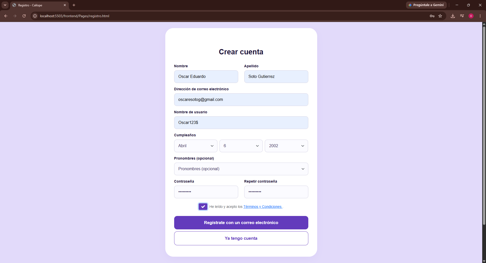
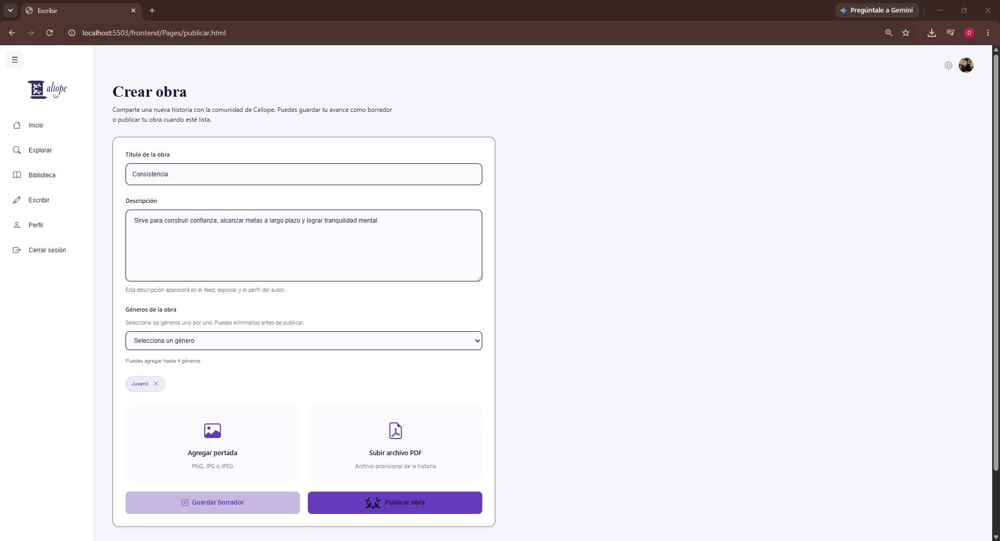
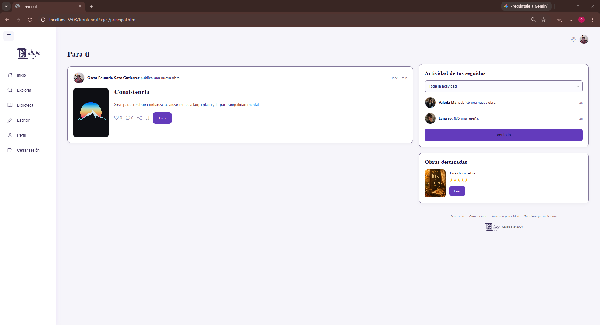
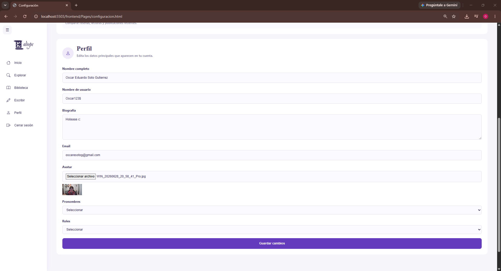
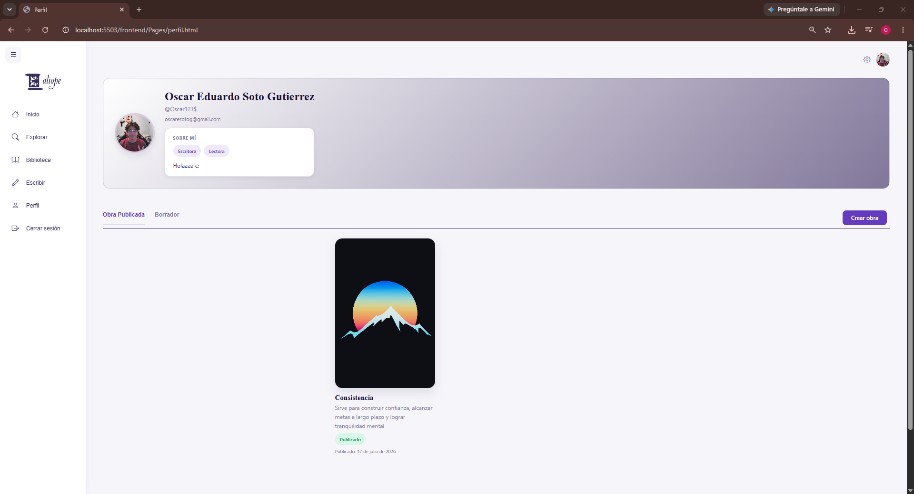

Caliope
es una plataforma social enfocada en lectores y escritores
Problema
Actualmente existen pocas plataformas enfocadas en escritores emergentes que les permitan publicar sus obras de forma sencilla y darles visibilidad. Muchas opciones disponibles son complejas, requieren conocimientos técnicos o están orientadas únicamente a la venta de libros, lo que dificulta que nuevos autores compartan su contenido y conecten con una comunidad de lectores. Además, los lectores no cuentan con un espacio centralizado donde descubrir nuevas historias, organizadas por géneros y creadas por autores independientes.
Solución
Calíope es una plataforma web diseñada para conectar escritores y lectores en un solo lugar. Permite a los autores crear una cuenta, publicar sus obras con información como título, descripción, portada y archivo PDF, clasificarlas por género y administrar su contenido desde un perfil personal. Los lectores pueden explorar las publicaciones, acceder a las obras y descubrir nuevos autores de forma sencilla. Además, la plataforma incorpora autenticación segura mediante JWT, opciones de personalización como tema claro u oscuro, configuraciones de privacidad y un formulario de contacto para brindar soporte a los usuarios. De esta manera, Calíope facilita la difusión de obras literarias y fomenta una comunidad digital dedicada a la lectura y la escritura.
Tecnologías
Funcionalidades
- Registro de usuarios
- Inicio de sesión
- Publicar historia
- Subir imagen de portada
- Mostrar publicaciones
- Configurar los estilo de la aplicación
- Configurar los datos del usuario
Capturas del Proyecto

Registro de Usuario

Inicio de sesión

publicación de la obra

Principal

Actualizar perfil

Información del perfil
Mi participación
Participé en el desarrollo del proyecto como desarrollador Full Stack, colaborando tanto en el frontend como en el backend. Implementé la autenticación mediante JWT para el inicio de sesión seguro, desarrollé funcionalidades relacionadas con la gestión de usuarios y la publicación de obras, además de colaborar en la integración entre la interfaz y los servicios REST. También participé en las pruebas, corrección de errores, control de versiones con Git y GitHub y en la documentación y presentación del funcionamiento de la plataforma.
Retos y Aprendizajes
Uno de los principales retos fue integrar correctamente el frontend con el backend, especialmente en el manejo de la autenticación y el envío del token JWT para acceder a los recursos protegidos. Otro desafío fue la carga y administración de archivos e imágenes de las obras, así como resolver conflictos de integración entre los diferentes módulos desarrollados por el equipo. Además, fue necesario adaptarse a cambios en el backend durante el desarrollo y asegurar que todas las funcionalidades continuaran operando correctamente.